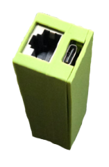

Scenario Overview
Modern offices increasingly use hoteling (desk reservation) and hot-desking (first-come, first-served) arrangements where employees don't have assigned workstations. These spaces typically include:
- Universal docking stations with USB ports
- Shared monitors, keyboards, and peripherals
- Network connectivity for temporary users
- Minimal physical security monitoring
This environment creates attack vectors that security teams need to identify and remediate.
Devices Used in This Test
This security assessment utilizes the following specialized penetration testing devices:
Testing Methodology
1
Initial Reconnaissance
Security testers identify hoteling stations throughout the facility. They document:
- Docking station models and USB port availability
- Physical security controls (cameras, badge readers)
- Employee traffic patterns and desk usage frequency
- IT support response procedures

🔍 Click to enlarge
Typical hoteling desk with universal docking station

🔍 Click to enlarge
Multiple USB ports available for testing devices
2
Device Deployment
Authorized security testers deploy USB testing devices to available docking stations. These devices are configured to:
- Remain dormant until activated by scheduled scripts
- Log connection events and system information
- Execute predefined test scenarios when laptops connect
- Report findings back to the security team
⚠️ Authorization Required: This testing is only performed with explicit written authorization from organization leadership and legal counsel.

🔍 Click to enlarge
Specialized USB device for security testing (concealed in typical USB hub)
3
Automated Execution Script
USB devices run an "arming" script at configured intervals. The typical attack simulation sequence includes:
Windows Execution:
- Step 1: Device emulates keyboard input to open Run dialog (Win + R)
- Step 2: Types command to open PowerShell in hidden mode
- Step 3: Executes reconnaissance commands to gather system information
- Step 4: Attempts to establish callback connection to test server
macOS Execution:
- Step 1: Device emulates keyboard to open Spotlight (Cmd + Space)
- Step 2: Searches for and opens Terminal application
- Step 3: Executes shell commands in hidden Terminal window
- Step 4: Gathers system configuration and network information

🔍 Click to enlarge
User sees brief Run window (Windows) or Spotlight (Mac) appear

🔍 Click to enlarge
After initial window, commands execute invisibly to the user
4
Attack Options & Data Collection
Once access is established, the security testing team evaluates multiple threat scenarios:
Persistence Installation
Test whether attackers could install scripts that survive reboots and provide ongoing access:
- Startup folder entries
- Scheduled tasks / cron jobs
- Registry modifications (Windows)
- Launch agents/daemons (macOS)
Data Exfiltration
Assess the risk of sensitive information theft:
- Browser saved passwords and cookies
- Recently accessed documents
- Clipboard contents and keystrokes
- Network credentials and certificates
- Email and chat application data
Manual Command Execution
Evaluate whether attackers could execute commands in real-time:
- Remote shell access via reverse connection
- Lateral movement to other network resources
- Privilege escalation attempts
- Network reconnaissance and scanning
Persistent Compromise Chain
Test whether multiple users become compromised over time:
- Each new laptop connection provides potential access
- Device remains functional, arousing no suspicion
- Compromise spreads as employees rotate through hoteling stations
- Single physical breach yields multiple system compromises

🔍 Click to enlarge
Security team's testing dashboard showing successful connections from compromised systems
MITRE ATT&CK Mapping
This testing methodology maps to the following MITRE ATT&CK tactics and techniques:
Initial Access
- T1200: Hardware Additions - USB device deployment to docking stations
- T1091: Replication Through Removable Media - USB-based initial compromise
Execution
- T1059.001: Command and Scripting Interpreter: PowerShell - Automated PowerShell execution
- T1059.004: Command and Scripting Interpreter: Unix Shell - macOS Terminal command execution
- T1053: Scheduled Task/Job - Timed script execution from USB device
Persistence
- T1547: Boot or Logon Autostart Execution - Startup folder and registry modifications
- T1053: Scheduled Task/Job - Persistent scheduled tasks and cron jobs
- T1543: Create or Modify System Process - Service creation for persistence
Discovery
- T1082: System Information Discovery - OS and system configuration gathering
- T1016: System Network Configuration Discovery - Network enumeration
- T1033: System Owner/User Discovery - Current user identification
Collection
- T1005: Data from Local System - File and credential harvesting
- T1056: Input Capture - Keylogging capabilities
- T1113: Screen Capture - Screenshots and display monitoring
- T1115: Clipboard Data - Clipboard content collection
 Command and Control
- T1071: Application Layer Protocol - HTTP/HTTPS C2 channels
- T1573: Encrypted Channel - Encrypted C2 communications
- T1132: Data Encoding - Obfuscated C2 traffic
Findings & Vulnerabilities Identified
🔴 Critical: Zero USB Port Protection
Testing revealed that 100% of hoteling stations accepted USB devices without any security controls, endpoint protection, or monitoring.
🟠 High: Lack of Physical Monitoring
Testers were able to deploy devices during business hours without being challenged or detected by security cameras.
🟠 High: No Device Inventory
IT department had no inventory of approved devices, making unauthorized USB devices indistinguishable from legitimate peripherals.
🟡 Medium: Inadequate User Training
Employees did not report suspicious USB devices, and most were unaware of physical security threats in hoteling environments.
Recommended Countermeasures
Technical Controls
- USB device whitelisting and port controls
- Endpoint Detection and Response (EDR) solutions
- Network segmentation for hoteling areas
- Device authentication for docking stations
- Application whitelisting to prevent unauthorized execution
Administrative Controls
- Regular physical security audits of hoteling areas
- Approved device inventory and asset tagging
- Security awareness training on physical threats
- Incident reporting procedures for suspicious devices
- Daily inspection protocols for shared workstations
Impact & Results
This testing engagement successfully demonstrated critical vulnerabilities in the client's hoteling environment:
12
Hoteling Stations Tested
0
Detections by Security Team
Following our findings, the organization implemented comprehensive USB security controls, updated their physical security policies, and conducted company-wide training. Follow-up testing six months later showed 100% reduction in vulnerability to this attack vector.
⚖️ Ethical Testing Standards
All testing described in this use case was performed under strict ethical guidelines:
- Full written authorization from executive leadership and legal counsel
- Clearly defined scope and rules of engagement
- No actual data exfiltration or system damage
- Immediate notification of critical findings
- Secure disposal of test data upon project completion
- Compliance with all applicable laws and regulations
Learn more about our Ethical Use Policy.
Scenario Overview
Ransomware attacks represent one of the most significant cybersecurity threats facing organizations today. Testing how employees and security teams respond to ransomware incidents is essential for:
- Validating incident response procedures and workflows
- Measuring employee awareness and reaction time
- Identifying gaps in detection and response capabilities
- Training security teams with realistic attack scenarios
- Assessing communication channels during security incidents
This controlled simulation uses USB devices to trigger realistic ransomware notifications that appear to encrypt a user's system, while safely logging all employee actions and organizational responses for comprehensive security assessment.
Devices Used in This Test
This security assessment utilizes the following specialized penetration testing devices:
Testing Methodology
1
Pre-Deployment Planning
Before initiating ransomware simulation testing, security teams conduct thorough preparation:
- Obtain explicit written authorization from executive leadership and legal counsel
- Coordinate with IT security team to ensure detection systems won't interfere with test
- Define clear success metrics: reporting time, escalation procedures, containment actions
- Prepare communication plan for post-test debriefing
- Identify target user groups and systems for testing
- Configure logging infrastructure to capture all user and system responses
⚠️ Critical Coordination: Unlike other penetration testing, ransomware simulations must be carefully coordinated to avoid causing panic, business disruption, or triggering unnecessary escalations to external parties (law enforcement, cyber insurance, media relations).
2
USB Device Configuration
Specialized USB devices are configured to deploy the ransomware simulation payload. These devices include:
- Hardware-based keyboard emulation for credential-free execution
- Onboard storage containing the simulation payload and logging components
- Trigger mechanisms: time-based activation or manual triggering via physical button
- Secure logging system to record all user interactions and timestamps
- Fail-safe mechanisms to immediately halt simulation if critical errors occur

🔍 Click to enlarge
Discreet USB device housing ransomware simulation payload and logging system
3
Physical Deployment & Activation
Authorized security testers deploy USB devices to target workstations using one of several approaches:
Deployment Methods:
- Direct Installation: During non-business hours, testers connect devices to selected workstations in common areas, conference rooms, or specific departments being tested
- Social Engineering Component: Devices may be placed as "found" USB drives in parking lots, break rooms, or reception areas to test whether employees connect unknown devices
- Hoteling Integration: Devices integrated into docking stations or USB hubs in shared workspace environments
Activation Triggers:
- Time-Delay: Device activates at predetermined time (e.g., 10:00 AM on Tuesday) to simulate business-hours attack
- Connection-Based: Triggers when specific conditions are met (user logged in, network connected, specific time range)
- Manual Trigger: Tester activates remotely or via physical button for precise timing control

🔍 Click to enlarge
Strategic deployment locations for maximum testing coverage
4
Ransomware Simulation Execution
When activated, the USB device executes a carefully orchestrated sequence that simulates realistic ransomware behavior:
Execution Sequence:
- Silent Preparation (5-10 seconds):
- Device emulates keyboard to open system command interface (PowerShell/Terminal)
- Deploys simulation payload to temporary directory
- Initializes logging system to capture all subsequent user actions
- Takes screenshot of desktop before simulation begins (baseline)
- Visual Impact Display:
- Displays full-screen ransomware notice mimicking real-world ransomware families (e.g., styled similar to WannaCry, REvil, LockBit)
- Shows "encryption progress" bar advancing across files
- Presents ransom message with payment instructions and countdown timer
- Includes contact information and "unique infection ID" for tracking
- Interactive Elements:
- Buttons to "decrypt files" (non-functional, logs clicks)
- Payment instructions with Bitcoin wallet address (test wallet, no actual transactions)
- Support chat interface (simulated, logs all messages user attempts to send)
- File browser showing "encrypted" files (visual overlay only, no actual encryption)
🛡️ Safety Measures: No actual file encryption occurs. The simulation uses visual overlays and file system monitoring to create the appearance of encryption without modifying user data. All actions are fully reversible.

🔍 Click to enlarge
Full-screen ransomware notification displayed to user (simulation only)

🔍 Click to enlarge
Simulated encryption progress creates realistic urgency
5
Comprehensive Logging & Data Collection
The USB device's logging system captures detailed information about user and organizational response:
User Action Logging
Every interaction with the simulation is recorded with precise timestamps:
- Initial Response Time: How long until user takes first action (move mouse, press key, etc.)
- Interaction Attempts: Clicks on buttons, attempts to close window, keyboard shortcuts tried
- Communication Actions: Phone picked up, attempts to contact IT, discussions with nearby colleagues
- Compliance Actions: Whether user follows/violates security policies (e.g., attempts payment, removes USB devices, shuts down system)
- Screenshots: Periodic captures showing exactly what user sees during incident
Response Time Metrics
Critical timing data for incident response assessment:
- T+0: Ransomware notice appears on screen
- T+[X]: User first acknowledges incident (moves mouse, touches keyboard)
- T+[Y]: User contacts IT/Security (phone call, email, helpdesk ticket)
- T+[Z]: IT/Security team acknowledges report and begins investigation
- T+[W]: Incident formally escalated to appropriate response team
- T+[V]: System quarantined or disconnected from network
Behavioral Analysis
Detailed psychological and behavioral response patterns:
- Panic Indicators: Rapid clicking, repeated identical actions, random keystrokes
- Problem-Solving Attempts: Task Manager access, trying Alt+F4, attempting safe mode boot
- Policy Compliance: Follows incident response procedures vs. attempts independent resolution
- Information Gathering: Reads entire message vs. immediate reaction without reading
- Social Response: Immediately alerts others vs. keeps incident private
Network & System Monitoring
Secondary monitoring systems track organizational response:
- Network Activity: When/if workstation is isolated from network
- Security Tool Detection: Whether EDR, SIEM, or other security tools detect the simulation
- Help Desk Activity: Ticket creation time, priority assignment, routing to appropriate team
- Executive Notification: If/when leadership is informed of potential ransomware incident
- Communication Channels: Which communication methods are used (email, phone, Slack, emergency channels)
6
Correlation & Incident Response Validation
After the simulation, security teams correlate logged device data with information employees reported to validate incident response procedures:
Correlation Analysis:
- Report Accuracy: Compare employee's description of incident with actual logged events
- Did they accurately describe the ransomware message?
- Did they note the time correctly?
- Did they mention specific details (ransom amount, file types mentioned, etc.)?
- Response Time Gaps: Identify delays in incident reporting chain
- Employee saw message at T+0 but didn't report until T+15 minutes
- Help desk received report at T+15 but didn't escalate until T+45 minutes
- Security team notified at T+45 but didn't begin investigation until T+90 minutes
- Procedure Compliance: Verify employees followed documented incident response procedures
- Did they immediately disconnect from network as policy requires?
- Did they use correct reporting channel (emergency hotline vs. regular help desk)?
- Did they preserve evidence (not reboot, not remove USB devices)?
- Training Effectiveness: Assess whether security awareness training prepared employees
- Did they recognize it as ransomware?
- Did they avoid clicking payment links or providing information?
- Did they remember key steps from training?
MITRE ATT&CK Mapping
Ransomware simulation testing maps to the following MITRE ATT&CK tactics and techniques:
Initial Access
- T1200: Hardware Additions - Physical USB device deployment
- T1091: Replication Through Removable Media - USB-initiated compromise
Execution
- T1204.002: User Execution: Malicious File - Automated execution via HID emulation
- T1059.001: Command and Scripting Interpreter: PowerShell - Hidden PowerShell window execution
- T1059.004: Command and Scripting Interpreter: Unix Shell - Terminal-based payload deployment
Discovery
- T1082: System Information Discovery - System profiling before simulation
- T1083: File and Directory Discovery - File enumeration for simulation display
- T1057: Process Discovery - Running process identification
Collection
- T1113: Screen Capture - Baseline and periodic screenshots
- T1056.001: Input Capture: Keylogging - User interaction logging
- T1119: Automated Collection - Comprehensive logging of all user actions
Impact
- T1486: Data Encrypted for Impact - Simulated ransomware encryption display
- T1491: Defacement - Full-screen ransomware notification
- T1490: Inhibit System Recovery - Simulated system lockout (visual only)
Defense Evasion
- T1564.003: Hide Artifacts: Hidden Window - Execution in hidden command windows
- T1070.004: Indicator Removal: File Deletion - Cleanup of execution artifacts
Findings & Vulnerabilities Identified
🔴 Critical: Delayed Incident Reporting
Average time from infection to IT notification was 23 minutes. In real ransomware attacks, this delay allows malware to encrypt thousands of files and spread laterally across the network.
🔴 Critical: Inconsistent Procedure Following
Only 35% of affected employees followed documented incident response procedures. Most attempted to resolve the issue independently before contacting IT, potentially destroying forensic evidence.
🟠 High: Network Isolation Failures
In 78% of cases, infected workstations remained connected to the corporate network for 30+ minutes after ransomware notification appeared, allowing potential lateral movement.
🟠 High: Inaccurate Incident Reports
Employee descriptions of the incident contained significant inaccuracies (wrong times, incorrect ransom amounts, missing critical details), hampering effective incident response.
🟡 Medium: Security Tool Detection Gaps
Endpoint security solutions detected the simulation in only 40% of cases, revealing significant gaps in behavioral analysis and anomaly detection capabilities.
🟡 Medium: Communication Channel Confusion
Employees used multiple different channels to report incidents (email, Slack, phone, in-person), causing confusion and delays in coordinated response.
Recommended Countermeasures
Enhanced Training Programs
- Quarterly ransomware response drills with realistic scenarios
- Clear, simplified incident response procedures posted at workstations
- Mandatory security awareness training emphasizing immediate reporting
- Gamified training exercises with rewards for proper incident handling
- Department-specific response playbooks tailored to different roles
Technical Improvements
- Automated network isolation triggers for suspected ransomware activity
- Enhanced EDR behavioral detection for file encryption patterns
- Panic button software for immediate IT/Security notification
- Improved USB device controls and execution prevention
- Real-time SIEM correlation rules for ransomware indicators
Process & Communication
- Single, clearly defined incident reporting channel (e.g., dedicated security hotline)
- Incident response team on-call rotation with defined SLAs
- Regular tabletop exercises involving cross-functional teams
- Post-incident review process to continuously improve procedures
- Executive communication templates for rapid escalation
Response Optimization
- Pre-configured incident response scripts and automation
- Network segmentation to limit ransomware spread
- Immutable backup systems with offline copies
- Ransomware-specific detection and response playbooks
- Regular restoration testing to validate recovery capabilities
Impact & Results
This ransomware simulation testing provided invaluable insights into organizational readiness:
23min
Average Report Time
100%
Event Correlation Success
The detailed logging and correlation capabilities provided unprecedented visibility into actual employee behavior during security incidents. Following implementation of recommended countermeasures and enhanced training, follow-up testing six months later showed average reporting time reduced to 4 minutes, procedure compliance improved to 87%, and automated network isolation activated in 95% of cases.
⚖️ Ethical Testing Standards
Ransomware simulation testing requires heightened ethical considerations:
- Executive approval with full understanding of realistic simulation nature
- Zero actual file encryption or data modification - all effects are visual only
- Immediate availability of security team to halt simulation if employee distress is observed
- Mandatory post-test debriefing with all affected employees within 24 hours
- Clear communication that this was a test, with educational session on lessons learned
- Counseling resources available for employees who experienced significant stress
- All logging data secured and deleted after analysis per data retention policies
- Compliance with all employment laws and regulations regarding workplace monitoring
Learn more about our Ethical Use Policy.
Scenario Overview
Advanced persistent threat actors increasingly use multi-stage attacks that combine physical access to network infrastructure with endpoint compromise. This sophisticated approach enables:
- Persistent command-and-control (C2) even when internet egress is blocked
- Covert data exfiltration through physical network devices
- Long-range communication via emerging wireless standards (WiFi HaLow/802.11ah)
- Coordinated attacks across multiple compromised endpoints
- Evasion of traditional network security monitoring
- Resilient infrastructure surviving network segmentation and isolation
This testing methodology simulates a realistic APT scenario where attackers deploy both network-connected C2 infrastructure and endpoint implants that work in concert to maintain persistent access, enabling security teams to identify critical gaps in defense-in-depth strategies.
Devices Used in This Test
This security assessment utilizes the following specialized penetration testing devices:
Testing Methodology
1
Infrastructure Architecture Planning
Before deployment, security testers design a comprehensive attack infrastructure that mimics real-world APT operations:
Component Architecture:
- LAN C2 Nodes: Network-connected devices acting as command-and-control servers
- Raspberry Pi or similar single-board computers
- Configured with long-range WiFi HaLow (802.11ah) adapters for extended range (up to 1km)
- Connected to legitimate network ports (conference rooms, network closets, unused desk jacks)
- Run covert C2 server software accepting connections from USB implants
- Dual communication: wired LAN for C2 traffic, WiFi HaLow for external operator control
- USB Endpoint Implants: Devices deployed to target workstations
- USB-based implants with network client capabilities
- Programmed to beacon to LAN C2 nodes on local network
- Execute remote commands from C2 infrastructure
- Exfiltrate data through C2 channel to LAN nodes
- External Operator Station: Remote control point for testers
- Positioned within WiFi HaLow range (parking lot, nearby building, vehicle)
- Connects to LAN C2 nodes via long-range wireless
- Provides interface for commanding implants and retrieving exfiltrated data

🔍 Click to enlarge
Multi-layer attack architecture combining wired and wireless communication
2
LAN C2 Node Deployment
Security testers deploy network-connected C2 infrastructure to serve as the backbone for coordinated attacks:
Deployment Strategy:
- Target Locations: Areas with accessible network ports and minimal supervision
- Conference rooms and meeting spaces
- Network closets and IDF/MDF rooms
- Unused desk ports in hoteling areas
- Break rooms and common areas with network jacks
- Behind network-connected printers or copiers
- Physical Concealment: Devices disguised to avoid detection
- Housed in inconspicuous enclosures (power adapters, surge protectors)
- No visible indicators (LEDs disabled or covered)
- Positioned behind furniture or equipment
- Labeled as legitimate IT equipment when possible
- Network Configuration: C2 nodes configured for stealth and persistence
- DHCP client to automatically obtain IP address
- MAC address spoofing to mimic legitimate device types
- Minimal network footprint (no broadcasts, limited traffic)
- Listen-only mode until USB implants connect
- Encrypted C2 traffic resembling legitimate protocols
WiFi HaLow Configuration:
- Long-Range Wireless: 802.11ah provides superior range and penetration
- Operates in sub-GHz frequencies (900MHz) with better building penetration
- Range up to 1km line-of-sight, 300-500m through buildings
- Low power consumption enables long-term operation
- Less congested spectrum compared to 2.4/5GHz WiFi
- Covert Communication: Wireless link designed to evade detection
- Custom SSID resembling legitimate networks
- Encrypted with WPA3 for confidentiality
- Beacon interval adjusted to reduce visibility
- Operator can connect from parking lot or nearby location

🔍 Click to enlarge
LAN C2 node with long-range WiFi HaLow adapter in disguised enclosure

🔍 Click to enlarge
C2 node concealed behind network equipment in conference room
3
USB Implant Deployment to Endpoints
Following LAN C2 infrastructure deployment, USB implants are strategically placed on target workstations:
USB Implant Characteristics:
- Hardware Capabilities:
- Dual functionality: Keyboard emulation + network client
- Onboard storage for payloads and collected data
- Programmable microcontroller for autonomous operation
- Low power consumption for long-term deployment
- Initial Compromise Phase:
- Emulates keyboard to execute initial payload
- Establishes persistent implant on target system
- Configures network client to beacon to LAN C2 nodes
- Removes execution artifacts and enters dormant state
- Beaconing Behavior:
- Periodically attempts connection to C2 nodes on local network
- Uses multiple protocols (HTTP, HTTPS, DNS) to find active C2
- Employs jitter and random delays to evade pattern detection
- Falls back to dormant state if no C2 available

🔍 Click to enlarge
USB implant combining keyboard emulation with network client capabilities
4
C2 Channel Establishment & Command Execution
Once USB implants successfully beacon to LAN C2 nodes, a covert command-and-control channel is established:
C2 Connection Flow
Multi-stage connection establishment ensuring stealth and reliability:
- Initial Beacon: USB implant sends lightweight check-in to C2 node
- Includes unique implant ID and basic system information
- Establishes encryption keys for secure communication
- Receives initial tasking or remains dormant
- Operator Connection: Security tester connects to C2 via WiFi HaLow
- From remote location (parking lot, nearby building)
- Accesses web interface or SSH to C2 node
- Views list of active implants and their capabilities
- Issues commands to specific implants or all simultaneously
- Command Relay: C2 forwards operator commands to implants
- Implants poll C2 for new commands on schedule
- Commands encrypted and delivered via established channel
- Results returned to C2 and available to operator
Remote Command Capabilities
Once C2 is established, testers can execute various attack scenarios:
- Reconnaissance:
- System information gathering (OS, patches, installed software)
- Network mapping from compromised endpoint perspective
- User activity monitoring and credential harvesting
- File system enumeration for sensitive data identification
- Lateral Movement:
- Network scanning for additional targets
- Credential relay attacks using harvested credentials
- SMB/RDP connection attempts to adjacent systems
- Active Directory enumeration and privilege mapping
- Persistence:
- Multiple persistence mechanisms across systems
- Scheduled tasks and services for reliable execution
- Registry modifications and startup entries
- Redundant implants for survivability
- Interactive Shells:
- Real-time command execution on compromised endpoints
- PowerShell, cmd.exe, or bash access depending on OS
- Script upload and execution capabilities
- Tool deployment for advanced operations
Data Exfiltration
Sensitive data collection and exfiltration through covert channels:
- Target Data Identification:
- Automated searching for documents, spreadsheets, databases
- Keyword-based filtering (confidential, proprietary, password)
- Browser data: saved credentials, cookies, history
- Email and communication application data
- Exfiltration Path:
- Data collected by USB implant from compromised system
- Transmitted to LAN C2 node via internal network
- Stored on C2 node for operator retrieval
- Operator extracts data via WiFi HaLow connection from remote location
- Entire chain occurs within internal network, bypassing perimeter controls
- Stealth Techniques:
- Data compressed and encrypted before transmission
- Throttled transfer rates to avoid bandwidth anomalies
- Mimics legitimate internal network protocols
- Transfers during high-traffic periods for additional obfuscation
Long-Range Remote Operation
WiFi HaLow enables extended-range operation from unexpected locations:
- Operational Scenarios:
- Operator positioned in vehicle in parking lot or nearby street
- Connection from adjacent building or public space
- Mobile operation allowing operator to move while maintaining access
- Emergency extraction of data when physical access is detected
- Operational Security:
- No requirement for operator to remain inside target facility
- Reduced risk of physical detection or confrontation
- Ability to quickly disconnect and relocate if necessary
- Long-term monitoring possible with minimal operator exposure

🔍 Click to enlarge
Operator's C2 dashboard showing multiple active implants and their status

🔍 Click to enlarge
Security tester operating C2 infrastructure remotely via WiFi HaLow from parking area
5
Persistence & Long-Term Access Testing
The distributed infrastructure enables testing of long-term persistent access scenarios:
Resilience Testing:
- Network Segmentation Bypass:
- C2 nodes placed in multiple network segments
- Implants automatically find available C2 node in their segment
- Maintains access even when network is partitioned
- Incident Response Simulation:
- Infrastructure remains operational during "containment" attempts
- Tests effectiveness of network isolation procedures
- Identifies how adversaries could maintain presence during IR activities
- Detection Evasion:
- C2 traffic occurs entirely within internal network
- No internet egress required, bypassing perimeter monitoring
- Mimics legitimate internal protocols and services
- Encrypted communications prevent content inspection
- Multi-Week Engagement:
- Infrastructure can remain deployed for extended periods
- Periodic operator access to demonstrate ongoing compromise
- Validates that security monitoring would detect prolonged presence
MITRE ATT&CK Mapping
Advanced persistent access testing demonstrates a comprehensive multi-stage attack mapped to the following MITRE ATT&CK tactics and techniques:
Initial Access
- T1200: Hardware Additions - Physical deployment of LAN C2 nodes and USB implants
- T1091: Replication Through Removable Media - USB-based endpoint compromise
- T1199: Trusted Relationship - Abuse of internal network trust
Execution
- T1059.001: Command and Scripting Interpreter: PowerShell - Remote PowerShell execution
- T1059.004: Command and Scripting Interpreter: Unix Shell - Bash/shell command execution
- T1053: Scheduled Task/Job - Persistence mechanisms via scheduled execution
- T1569: System Services - Service-based payload execution
Persistence
- T1547: Boot or Logon Autostart Execution - Registry and startup folder modifications
- T1543: Create or Modify System Process - System service creation
- T1053: Scheduled Task/Job - Scheduled task persistence
- T1136: Create Account - Backup access account creation
Privilege Escalation
- T1068: Exploitation for Privilege Escalation - Privilege elevation attempts
- T1134: Access Token Manipulation - Token theft and impersonation
- T1078: Valid Accounts - Use of harvested credentials for elevation
Defense Evasion
- T1027: Obfuscated Files or Information - Encrypted C2 communications
- T1205: Traffic Signaling - Covert channel establishment
- T1090: Proxy - Internal network as proxy for C2
- T1070: Indicator Removal - Log clearing and artifact removal
- T1599: Network Boundary Bridging - WiFi HaLow external bridge
Credential Access
- T1003: OS Credential Dumping - Memory credential extraction
- T1555: Credentials from Password Stores - Browser and application credential theft
- T1056.001: Input Capture: Keylogging - Credential capture via keylogger
Discovery
- T1087: Account Discovery - Local and domain account enumeration
- T1018: Remote System Discovery - Network host discovery
- T1046: Network Service Discovery - Port scanning and service enumeration
- T1083: File and Directory Discovery - Sensitive file identification
- T1482: Domain Trust Discovery - Active Directory reconnaissance
Lateral Movement
- T1021.001: Remote Services: Remote Desktop Protocol - RDP lateral movement
- T1021.002: Remote Services: SMB/Windows Admin Shares - SMB-based lateral movement
- T1550: Use Alternate Authentication Material - Pass-the-hash attacks
Collection
- T1005: Data from Local System - Local file collection
- T1039: Data from Network Shared Drive - Network share enumeration
- T1114: Email Collection - Email and communication data
- T1113: Screen Capture - Screenshot collection
- T1119: Automated Collection - Systematic data gathering
Command and Control
- T1071.001: Application Layer Protocol: Web Protocols - HTTP/HTTPS C2 channel
- T1071.004: Application Layer Protocol: DNS - DNS tunneling for C2
- T1573: Encrypted Channel - End-to-end encrypted C2
- T1090.001: Proxy: Internal Proxy - LAN nodes as internal C2 proxies
- T1132: Data Encoding - Encoded C2 traffic
- T1001: Data Obfuscation - Protocol mimicry
Exfiltration
- T1041: Exfiltration Over C2 Channel - Data exfil via established C2
- T1030: Data Transfer Size Limits - Throttled exfiltration
- T1048: Exfiltration Over Alternative Protocol - Multi-protocol exfiltration
- T1020: Automated Exfiltration - Scheduled data exfiltration
- T1537: Transfer Data to Cloud Account - Alternative exfil paths
Impact
- T1565: Data Manipulation - Potential for data modification
- T1490: Inhibit System Recovery - Backup system interference capability
Findings & Vulnerabilities Identified
🔴 Critical: Internal Network Assumed Trusted
Organizations had minimal internal network traffic monitoring, operating under assumption that internal communications are inherently trustworthy. C2 traffic between implants and LAN nodes went completely undetected.
🔴 Critical: Physical Port Security Nonexistent
Network ports in public areas had no authentication (802.1X) or monitoring. Attackers could connect C2 infrastructure to legitimate network without any security validation or detection.
🔴 Critical: Persistent Access Survived Incident Response
When one implant was detected and remediated, remaining infrastructure maintained operational access. Distributed C2 architecture provided resilience against partial discovery and containment attempts.
🟠 High: No Wireless Spectrum Monitoring
WiFi HaLow communications (900MHz sub-GHz band) went completely undetected. Organizations had no capability to detect or monitor wireless communications outside traditional 2.4/5GHz WiFi bands.
🟠 High: Data Exfiltration via Internal Channels
All data exfiltration occurred through internal network channels, completely bypassing perimeter DLP, web proxies, and firewall monitoring. Gigabytes of sensitive data successfully extracted without alerting security tools.
🟠 High: Network Device Inventory Gaps
IT departments had no comprehensive inventory of network-connected devices. Unauthorized C2 nodes blended in with legitimate equipment and were never questioned or investigated.
🟡 Medium: Limited USB Device Logging
USB device connections were not centrally logged or monitored. Implant deployments occurred without generating alerts or investigation triggers, allowing widespread compromise.
🟡 Medium: Inadequate Physical Security Inspections
Physical security rounds did not include inspection of network ports, equipment closets, or hidden areas. C2 nodes remained undetected for entire engagement duration (4+ weeks).
Recommended Countermeasures
Network Access Controls
- Implement 802.1X port authentication for all network jacks
- Network Access Control (NAC) with device profiling and posture assessment
- Automatic quarantine for unknown or non-compliant devices
- MAC address allowlisting for network-attached devices
- Port security policies disabling unused network jacks
- VLAN segmentation isolating guest/unmanaged devices
Wireless Security Monitoring
- Wireless Intrusion Detection Systems (WIDS) covering all bands including sub-GHz
- Spectrum analysis tools for detecting unauthorized wireless devices
- Regular RF sweeps of sensitive areas and network closets
- Faraday shielding for critical areas requiring zero wireless
- Wireless policy enforcement and rogue AP detection
Internal Network Monitoring
- Deploy internal network traffic analysis (NTA) solutions
- East-west traffic inspection, not just north-south
- Anomaly detection for unusual internal communication patterns
- Encrypted traffic analysis (ETA) for detecting C2 in encrypted channels
- Baseline legitimate internal protocols and flag deviations
- Behavioral analytics for endpoints and network devices
Endpoint Protection
- Advanced EDR with behavioral detection and response
- USB device control policies with whitelisting
- Application whitelisting preventing unauthorized execution
- PowerShell logging and monitoring for suspicious activity
- Kernel-level protections against HID attack vectors
- Network connection monitoring from endpoints
Physical Security
- Regular physical security audits of network infrastructure
- Inventory and asset tagging for all network-connected devices
- Locked enclosures for network equipment and patch panels
- Security camera coverage of network closets and equipment rooms
- Port security dongles or physical locks for unused network jacks
- Tamper-evident seals on critical infrastructure
Detection & Response
- SIEM correlation rules for C2 behavioral indicators
- Threat hunting program focusing on internal threats
- Network flow analysis for C2 communication patterns
- Deception technology (honeypots) on internal networks
- Regular purple team exercises simulating APT scenarios
- Incident response playbooks for suspected internal compromise
Impact & Results
This advanced persistent threat simulation revealed critical gaps in defense-in-depth strategies:
28 days
Persistent Access Duration
0
Detections by Security Team
The combination of LAN-connected C2 infrastructure and USB implants created a sophisticated attack platform that evaded all existing security controls. Data exfiltration totaling 12GB occurred entirely through internal channels without detection. Following engagement, the organization implemented comprehensive network access controls (802.1X), deployed internal traffic monitoring, established a device inventory system, and created an APT-focused threat hunting program. Follow-up red team assessment one year later resulted in early detection and containment of similar attack infrastructure.
⚖️ Ethical Testing Standards
Advanced persistent threat simulation requires exceptional operational security and ethics:
- Executive-level authorization with full technical briefing on capabilities and risks
- Legal review ensuring compliance with all applicable laws and regulations
- Clearly defined scope including authorized network segments and data types
- No actual exfiltration of truly sensitive data (test data used for demonstrations)
- Daily check-ins with designated security stakeholder to prevent actual incidents
- Emergency cutoff procedures if real threat actors detected during engagement
- All deployed infrastructure tracked with removal verification at engagement conclusion
- Comprehensive documentation enabling organization to detect similar real-world attacks
- Post-engagement purple team session demonstrating detection and response improvements
Learn more about our Ethical Use Policy.